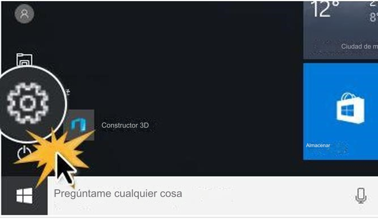
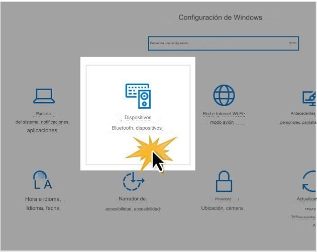
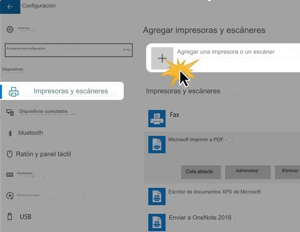
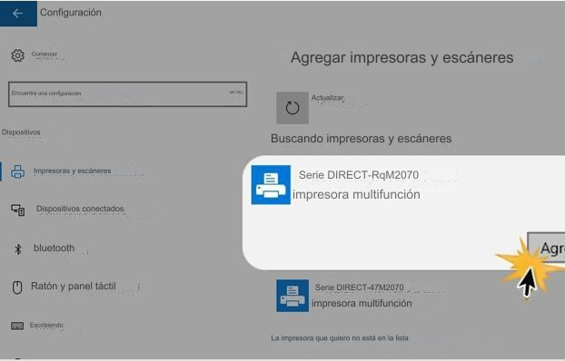

paso 1: al principio menú, haga clic en el engranaje icono para acceder su computadora opciones de configuración

paso 2: los ajustes menú se abrirá. Allí debes hacer clic en Dispositivos opción

paso 3: Vas a ver los dispositivos panel de configuración . Hacer asegúrese de que las impresoras y escáneres opción es seleccionado en el lado izquierdo de la ventana. A la derecha, haga clic en Agregar una impresora o escáner

paso 4: Los dispositivos que pueden conectarse a su computadora se actualizará .
Seleccione la impresora que desea agregar y haga clic en Agregar dispositivo

Paso 5:
Escriba el número WPS en el espacio en blanco espacio y haga clic en Siguiente para conectar la impresora a su computadora